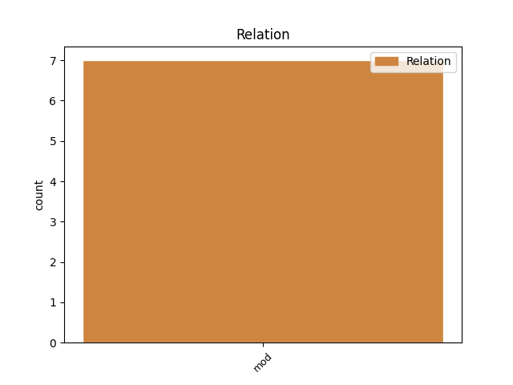
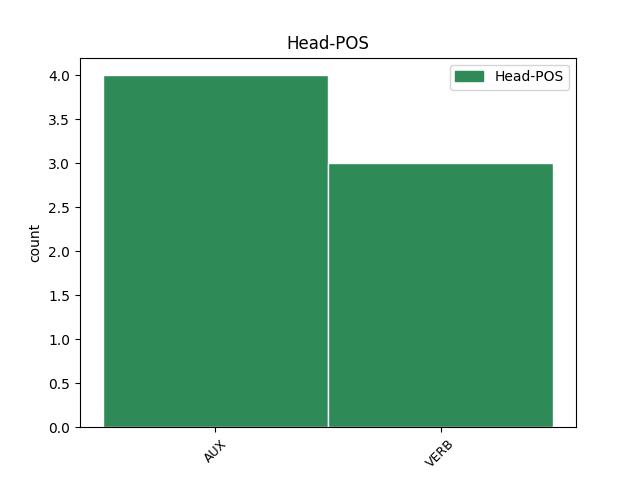

Distribution of features within this leaf


Agreement Rules sorted by frequency.
- When the dependent token is the direct object complements(comp:obj) of the head token, and the dependent token is PRON.
1 Ma _ _ _ _ 0 _ _ _
2 baamtuwaat _ _ _ _ 0 _ _ _
3 fi _ _ _ _ 0 _ _ _
4 ne _ _ _ _ 0 _ _ _
5 : _ _ _ _ 0 _ _ _
6 man _ _ _ _ 0 _ _ _
7 taaral _ _ _ _ 0 _ _ _
8 gi _ _ _ _ 0 _ _ _
9 lal _ _ _ _ 0 _ _ _
10 seen _ _ _ _ 0 _ _ _
11 am _ _ _ _ 0 _ _ _
12 mbind _ _ _ _ 0 _ _ _
13 ak _ _ _ _ 0 _ _ _
14 ni _ _ _ _ 0 _ _ _
15 mu _ _ _ _ 0 _ _ _
16 di _ _ _ _ 0 _ _ _
17 firndeele _ _ _ _ 0 _ _ _
18 ne _ _ _ _ 0 _ _ _
19 amul am VERB VERB Mood=Ind|Number=Sing|Person=3|Polarity=Neg|VerbForm=Fin 0 _ _ _
20 lu bu PRON PRON NounClass=Wol7|Number=Sing|Person=3|PronType=Rel 19 comp:obj _ _
21 làmmiñu _ _ _ _ 0 _ _ _
22 wolof _ _ _ _ 0 _ _ _
23 di _ _ _ _ 0 _ _ _
24 ñeetaane _ _ _ _ 0 _ _ _
25 weneen _ _ _ _ 0 _ _ _
26 làkk _ _ _ _ 0 _ _ _
27 mu _ _ _ _ 0 _ _ _
28 a _ _ _ _ 0 _ _ _
29 ma _ _ _ _ 0 _ _ _
30 tax _ _ _ _ 0 _ _ _
31 a _ _ _ _ 0 _ _ _
32 sukkandiku _ _ _ _ 0 _ _ _
33 ci _ _ _ _ 0 _ _ _
34 seen _ _ _ _ 0 _ _ _
35 i _ _ _ _ 0 _ _ _
36 woy _ _ _ _ 0 _ _ _
37 . _ _ _ _ 0 _ _ _
1 Gannaaw _ _ _ _ 0 _ _ _
2 nit _ _ _ _ 0 _ _ _
3 ku _ _ _ _ 0 _ _ _
4 mu _ _ _ _ 0 _ _ _
5 , _ _ _ _ 0 _ _ _
6 jortees _ _ _ _ 0 _ _ _
7 na na AUX INFL Aspect=Perf|Mood=Ind|Number=Sing|Person=3 50 mod _ _
8 ne _ _ _ _ 0 _ _ _
9 set _ _ _ _ 0 _ _ _
10 na _ _ _ _ 0 _ _ _
11 ci _ _ _ _ 0 _ _ _
12 ag _ _ _ _ 0 _ _ _
13 tooñeel _ _ _ _ 0 _ _ _
14 ba _ _ _ _ 0 _ _ _
15 keroog _ _ _ _ 0 _ _ _
16 ba _ _ _ _ 0 _ _ _
17 ñu _ _ _ _ 0 _ _ _
18 di _ _ _ _ 0 _ _ _
19 biral _ _ _ _ 0 _ _ _
20 ne _ _ _ _ 0 _ _ _
21 tooñ _ _ _ _ 0 _ _ _
22 na _ _ _ _ 0 _ _ _
23 , _ _ _ _ 0 _ _ _
24 su _ _ _ _ 0 _ _ _
25 fekkee _ _ _ _ 0 _ _ _
26 ne _ _ _ _ 0 _ _ _
27 gisees _ _ _ _ 0 _ _ _
28 na _ _ _ _ 0 _ _ _
29 ne _ _ _ _ 0 _ _ _
30 mëneesu _ _ _ _ 0 _ _ _
31 ko _ _ _ _ 0 _ _ _
32 bañ _ _ _ _ 0 _ _ _
33 a _ _ _ _ 0 _ _ _
34 jàpp _ _ _ _ 0 _ _ _
35 , _ _ _ _ 0 _ _ _
36 gépp _ _ _ _ 0 _ _ _
37 teeŋal _ _ _ _ 0 _ _ _
38 gu _ _ _ _ 0 _ _ _
39 dul _ _ _ _ 0 _ _ _
40 gi _ _ _ _ 0 _ _ _
41 ci _ _ _ _ 0 _ _ _
42 yell _ _ _ _ 0 _ _ _
43 ngir _ _ _ _ 0 _ _ _
44 jot _ _ _ _ 0 _ _ _
45 ci _ _ _ _ 0 _ _ _
46 jëmmam _ _ _ _ 0 _ _ _
47 , _ _ _ _ 0 _ _ _
48 yoon _ _ _ _ 0 _ _ _
49 war _ _ _ _ 0 _ _ _
50 na na AUX INFL Aspect=Perf|Mood=Ind|Number=Sing|Person=3 0 _ _ _
51 ko _ _ _ _ 0 _ _ _
52 daan _ _ _ _ 0 _ _ _
53 daan _ _ _ _ 0 _ _ _
54 yu _ _ _ _ 0 _ _ _
55 tar _ _ _ _ 0 _ _ _
56 . _ _ _ _ 0 _ _ _
1 Li _ _ _ _ 0 _ _ _
2 mu _ _ _ _ 0 _ _ _
3 wax _ _ _ _ 0 _ _ _
4 Sërin _ _ _ _ 0 _ _ _
5 Tuubaa _ _ _ _ 0 _ _ _
6 ak _ _ _ _ 0 _ _ _
7 Alhaaji _ _ _ _ 0 _ _ _
8 Maalig _ _ _ _ 0 _ _ _
9 lu lu PRON PRON NounClass=Wol7|Number=Sing|Person=3|PronType=Int 11 mod _ _
10 tax _ _ _ _ 0 _ _ _
11 jurul jur VERB VERB Mood=Ind|Number=Sing|Person=3|Polarity=Neg|VerbForm=Fin 0 _ _ _
12 coow _ _ _ _ 0 _ _ _
13 ? _ _ _ _ 0 _ _ _
1 Lu _ _ _ _ 0 _ _ _
2 war _ _ _ _ 0 _ _ _
3 ca _ _ _ _ 0 _ _ _
4 ñoñ _ _ _ _ 0 _ _ _
5 Abuu _ _ _ _ 0 _ _ _
6 Hanifa _ _ _ _ 0 _ _ _
7 nag _ _ _ _ 0 _ _ _
8 tekkiwul tekki VERB VERB Mood=Ind|Number=Sing|Person=3|Polarity=Neg|VerbForm=Fin 0 _ _ _
9 farata _ _ _ _ 0 _ _ _
10 la la AUX COP Mood=Ind|Number=Sing|Person=3|VerbForm=Fin 8 comp:obj _ SpaceAfter=No
11 . _ _ _ _ 0 _ _ _
Disagree Examples:
1 Rax-ci-dolli _ _ _ _ 0 _ _ _
2 mayuñu may VERB VERB Mood=Ind|Number=Plur|Person=3|Polarity=Neg|VerbForm=Fin 0 _ _ _
3 leen ko PRON CL Case=Acc|Number=Plur|Person=2,3|PronType=Prs 2 comp:obj _ _
4 fu _ _ _ _ 0 _ _ _
5 ñu _ _ _ _ 0 _ _ _
6 yakke _ _ _ _ 0 _ _ _
7 seen _ _ _ _ 0 _ _ _
8 nàkk _ _ _ _ 0 _ _ _
9 . _ _ _ _ 0 _ _ _
1 Képp _ _ _ _ 0 _ _ _
2 ku _ _ _ _ 0 _ _ _
3 wuute _ _ _ _ 0 _ _ _
4 dees di AUX AUX Aspect=Imp|Mood=Ind|Person=0|Tense=Pres 0 _ _ _
5 na na AUX INFL Aspect=Perf|Mood=Ind|Number=Sing|Person=3 4 comp:aux _ _
6 la _ _ _ _ 0 _ _ _
7 mbugal _ _ _ _ 0 _ _ _
8 , _ _ _ _ 0 _ _ _
9 ñu _ _ _ _ 0 _ _ _
10 folli _ _ _ _ 0 _ _ _
11 la _ _ _ _ 0 _ _ _
12 mbaa _ _ _ _ 0 _ _ _
13 ñu _ _ _ _ 0 _ _ _
14 rey _ _ _ _ 0 _ _ _
15 la _ _ _ _ 0 _ _ _
16 . _ _ _ _ 0 _ _ _
1 Man _ _ _ _ 0 _ _ _
2 nag _ _ _ _ 0 _ _ _
3 ma _ _ _ _ 0 _ _ _
4 ne _ _ _ _ 0 _ _ _
5 ngir _ _ _ _ 0 _ _ _
6 dëggal _ _ _ _ 0 _ _ _
7 niroo _ _ _ _ 0 _ _ _
8 googu _ _ _ _ 0 _ _ _
9 : _ _ _ _ 0 _ _ _
10 mbaanaari _ _ _ _ 0 _ _ _
11 séeréer _ _ _ _ 0 _ _ _
12 yu _ _ _ _ 0 _ _ _
13 yàgg _ _ _ _ 0 _ _ _
14 ya _ _ _ _ 0 _ _ _
15 ak _ _ _ _ 0 _ _ _
16 mbaanaari _ _ _ _ 0 _ _ _
17 waa _ _ _ _ 0 _ _ _
18 Isipt _ _ _ _ 0 _ _ _
19 yi _ _ _ _ 0 _ _ _
20 walla _ _ _ _ 0 _ _ _
21 seen _ _ _ _ 0 _ _ _
22 pyramide _ _ _ _ 0 _ _ _
23 yi _ _ _ _ 0 _ _ _
24 , _ _ _ _ 0 _ _ _
25 xool-leen xool VERB VERB Mood=Imp|Number=Plur|Person=2|VerbForm=Fin 0 _ _ _
26 leen ko PRON CL Case=Acc|Number=Plur|Person=2,3|PronType=Prs 25 comp:obj _ SpaceAfter=No
27 . _ _ _ _ 0 _ _ _
1 Waxuma wax VERB VERB Mood=Ind|Number=Sing|Person=1|Polarity=Neg|VerbForm=Fin 0 _ _ _
2 la ko PRON CL Case=Acc|Number=Sing|Person=2|PronType=Prs 1 comp:obj _ _
3 nag _ _ _ _ 0 _ _ _
4 suulaale _ _ _ _ 0 _ _ _
5 gi _ _ _ _ 0 _ _ _
6 waa _ _ _ _ 0 _ _ _
7 Isipt _ _ _ _ 0 _ _ _
8 yi _ _ _ _ 0 _ _ _
9 daan _ _ _ _ 0 _ _ _
10 suulaale _ _ _ _ 0 _ _ _
11 néew _ _ _ _ 0 _ _ _
12 bi _ _ _ _ 0 _ _ _
13 ak _ _ _ _ 0 _ _ _
14 i _ _ _ _ 0 _ _ _
15 bagaasam _ _ _ _ 0 _ _ _
16 te _ _ _ _ 0 _ _ _
17 séeréer _ _ _ _ 0 _ _ _
18 su _ _ _ _ 0 _ _ _
19 yàgg _ _ _ _ 0 _ _ _
20 sa _ _ _ _ 0 _ _ _
21 daan _ _ _ _ 0 _ _ _
22 ko _ _ _ _ 0 _ _ _
23 def _ _ _ _ 0 _ _ _
24 . _ _ _ _ 0 _ _ _
1 Doxiinu _ _ _ _ 0 _ _ _
2 Brusiya _ _ _ _ 0 _ _ _
3 wii _ _ _ _ 0 _ _ _
4 dey _ _ _ _ 0 _ _ _
5 dees di AUX AUX Aspect=Imp|Mood=Ind|Person=0|Tense=Pres 0 _ _ _
6 na na AUX INFL Aspect=Perf|Mood=Ind|Number=Sing|Person=3 5 comp:aux _ _
7 ko _ _ _ _ 0 _ _ _
8 lim _ _ _ _ 0 _ _ _
9 mu _ _ _ _ 0 _ _ _
10 dig _ _ _ _ 0 _ _ _
11 soopiku _ _ _ _ 0 _ _ _
12 gu _ _ _ _ 0 _ _ _
13 mag _ _ _ _ 0 _ _ _
14 ci _ _ _ _ 0 _ _ _
15 taarixu _ _ _ _ 0 _ _ _
16 bennoo _ _ _ _ 0 _ _ _
17 gu _ _ _ _ 0 _ _ _
18 Almaañ _ _ _ _ 0 _ _ _
19 gi _ _ _ _ 0 _ _ _
20 . _ _ _ _ 0 _ _ _